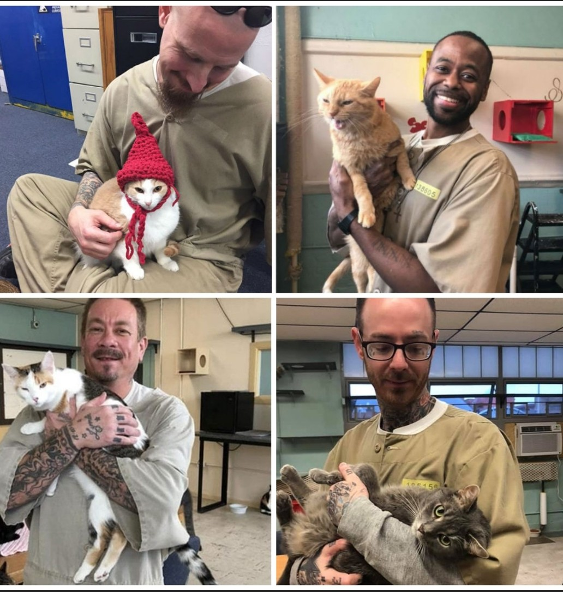

What do "animals" mean for you??
Animals are a natural part of our lives, but I think their meaning and role varies greatly from person to person. Some people see them as members of the family, others as symbols of nature, and still others as learning tools or healing beings.
What about you
When you think of animals, what emotion or image comes to mind most strongly? Do you think of them as "things we want to protect," "companions we live with," or do they have a completely different meaning?
Dog
House Dog

Dogs are one of the most popular pets in the world, and they come in a wide variety of breeds, each with its own unique characteristics and traits. From small and energetic Chihuahuas to large and gentle Great Danes, there is a dog breed to suit every lifestyle and personality.
Even though they're all called "dogs," each one has a completely different personality and mannerisms.
What kind of expressions do they make? When they wake up in the morning, when they come home, when you play with them...how does your dog blend into your daily life and bring you happiness?
Surely the way it wags its tail when it's happy, or the way it looks when it's being affectionate, has a "special meaning" that only you can understand. Is your dog a supportive companion as a family member, a comforting partner, or a being that brings a little happiness to your life?
Military Working Dogs

Military dogs are important companions to humans on the battlefield. They have saved the lives of many soldiers by detecting explosives and alerting them to danger. Dogs have a superior sense of smell and sensitivity to humans, allowing them to perform tasks that humans cannot.
Military dogs are also assigned to soldiers, and strong bonds are formed through training and living together. The presence of a dog also provides emotional support to soldiers in harsh environments. After completing their duties and retiring, many dogs often live peacefully in their caretakers' homes.
When we think about military dogs, they are not just animals, but also companions and brave partners who cooperate with humans on the battlefield.
Cat
House cat

A house cat is a cat that lives indoors with humans. While free-spirited, they can also be a companionable presence. They typically spend their time sunbathing or roaming the house, living at their own pace.
Cats have keen senses and are able to detect changes in noise and leap up to high places. They're also surprisingly empathetic, often empathizing with their owners' feelings, such as quietly sitting nearby if they're feeling down.
House cats have access to food and a place to sleep, so they're less exposed to dangers than they would be in the wild and can live a tranquil life. However, they're prone to lack of exercise, so playtime and moderate stimulation are important.
Overall, cats living at home are like quiet, gentle companions who bring a little comfort and warmth to our daily lives.
Prison Programs Help Cat and People
Several countries have implemented an initiative in which prisons accept rescued cats and have inmates care for them. Learning about this system, one is struck by the power of the relationship between animals and people. Cats have a mysterious ability to soothe people's hearts simply by being there.
By caring for the cats, inmates learn responsibility and compassion. Many say that by feeding and cleaning every day and watching over the cats' peaceful expressions, they discover their own kindness. The presence of cats also eases loneliness and anger, bringing a small measure of healing to the harsh environment of prison.
But this system also represents an opportunity for rescued cats. Cats with nowhere to go can find a safe place to live, and eventually meet new families. This initiative, which has a positive impact on both cats and people, quietly teaches us the power of animals to change people.